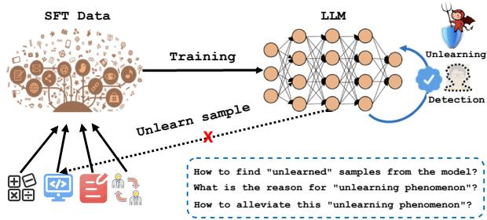
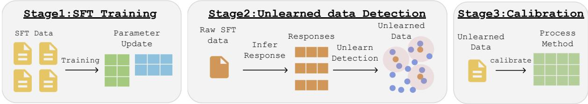
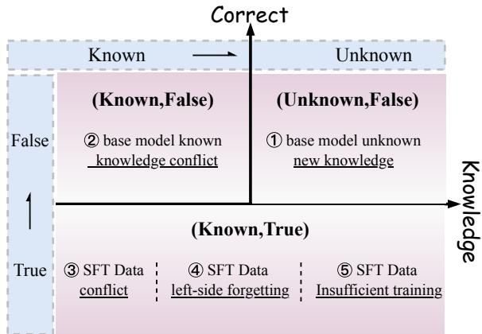

SFT 为什么"学不会"：不完整学习现象（ILP）的系统性研究
论文：Why Supervised Fine-Tuning Fails to Learn: A Systematic Study of Incomplete Learning in Large Language Models 作者：Chao Xue, Yao Wang 等（UNSW / 腾讯混元 / 腾讯元宝 / UESTC / 北京大学），2026 本地文件：
research_files/papers/Xue 等 - 2026 - Why Supervised Fine-Tuning Fails to Learn A Systematic Study of Incomplete Learning in Large Langua.pdf
一句话总结
SFT 训练 loss 收敛 ≠ 训练数据被学会。论文首次系统研究了不完整学习现象（Incomplete Learning Phenomenon, ILP）：SFT 收敛后，模型在自己训练过的数据上仍有平均 15.3% ± 2.1% 的样本答不对；并给出"检测 → 归因 → 定向干预"的完整框架，将未学会样本归因于 5 类成因，每类成因需要不同的"药方"。
1. 什么是 ILP
定义：SFT 收敛后（loss 稳定、排除欠训练），用模型重新评估它自己的 SFT 训练集，仍有一部分样本被持续答错，且跨随机种子、跨解码设置稳定复现。

注意区分三个概念：
| 概念 | 含义 | 与 ILP 的区别 |
|---|---|---|
| 灾难性遗忘（Catastrophic Forgetting） | 丢了之前已学会的能力 | ILP 是从未学会，不是遗忘 |
| 机器遗忘（Machine Unlearning） | 主动擦除特定知识 | ILP 是被动、非预期的学习失败 |
| ILP | 训练信号就在眼前，但模型没内化 | 发生在训练集本身，而非 held-out 集 |
为什么值得关心：
- SFT 数据（尤其医疗、法律等专家领域）标注成本高，没学会 = 直接浪费；
- 未学会样本不是随机的——集中在罕见案例、组合模式、知识密集样本上，恰好是最影响可靠性的部分；
- 聚合指标会掩盖 ILP：benchmark 总分在涨，特定的监督样本可能持续失败。
2. 如何检测"未学会"样本
整体框架分三阶段：SFT 训练 → 未学会样本检测 → 校准修复。

2.1 自由文本 → 多选题（MC）化
SFT 响应是自由文本，样本级对错难以标准化判定。论文把每条 SFT 样本转成多选题：原响应作为正确选项，另构造若干语义合理但错误的干扰项。此转换只用于检测，不改变 SFT 训练目标。
2.2 收敛后重评估 + 稳健判定
训练集准确率：
单次准确率太粗，混入随机性，因此用重复采样：
- pass@N：N 次独立推理中答对的比例，衡量监督信号被恢复的一致性；
- Best-of-N（BoN）：取 N 次中置信度最高的预测，作为模型能力的上界估计；
- 判定规则：pass@N 低于阈值 \(T\)（实验取 \(T=0.2\)，BoN-5 采样）即视为未学会。
普遍性结论：在 10 个基准 SFT 数据集上，平均 \(15.3\% \pm 2.1\%\) 的监督样本在 SFT 收敛后仍未学会，跨模型家族（Qwen / LLaMA / OLMo2）、跨领域均成立。
2.3 归因用的两个诊断信号
- 知识存在性：SFT 前先测基座模型 zero-shot 能否答对，\(\mathcal{P}_{\mathrm{exist}}(x) = \mathbb{I}\left(\mathrm{Acc}(\mathcal{M}_{\mathrm{base}}(x)) > 0.8\right)\)；
- 分布偏移：基座与 SFT 后模型预测分布的 JS 散度 \(D_{\mathrm{JS}}(P_{\mathrm{base}} \| P_{\mathrm{SFT}})\)。
两者结合，可区分"基座本来就不知道"、"基座有冲突的先验"、"SFT 更新不足"等不同情形。
3. 五大成因与定向干预（核心）
论文的归因框架可以用一张"知识 × 对错"二维图概括：横轴是基座模型是否具备该知识（Known / Unknown），纵轴是 SFT 后是否答对（Correct / False）。

- (Unknown, False)：基座不知道 → 成因① 知识缺失；
- (Known, False)：基座"知道"但知道的是错的/冲突的 → 成因② SFT 与基座冲突；
- (Known, True) 但仍未学会 → 成因③ 数据内部冲突、④ 左侧遗忘、⑤ 训练不足。
① 预训练知识缺失 → 继续预训练（CPT）注入知识
诊断：用 OpenIE 把未学会样本抽成主-谓-宾三元组，得到候选知识集 \(\mathcal{K}_{\mathrm{cand}}\)；对每条知识探测，满足
即判为盲区知识（反复采样都答不对 = 知识缺失，而非优化不足）。
干预：对每个未知实体检索 WikiData / Google / o1 等外部来源（平均 \(20 \pm 1.1\) 篇相关文档），构建知识增强语料 \(\mathcal{C}_{\mathrm{aug}}\)，按比例混合后做 CPT，再重新 SFT：
效果：MedQA / LegalBench / FinanceBench 上提升 +9.4% ~ +14.1%（如 MedQA +12.5%）。
关键对照实验（最能说明问题的一组）：把 SFT 从 2 epoch 加到 10 epoch，知识盲区覆盖率几乎不动（MedQA 65.3% → 66.8%）；而 CPT + SFT 直接拉到 82.1%。知识盲区具有"SFT 不可学性"——基座没有的知识，光靠多训几轮 SFT 是灌不进去的，必须回到预训练阶段注入。
② SFT 监督与基座知识冲突 → CPT 校准
诊断：基座模型对错误答案置信度很高时，SFT 很难纠正。定义高置信错误：
满足条件的样本构成高置信错误集 \(\mathcal{E}\)。
干预：对冲突样本从 Wikipedia / 领域语料检索权威信息，同样走"混合语料 + CPT"流程，先校准基座内部知识表征，再 SFT。
效果：ARC / CommonQA / SocialIQA / MedMCQA 上 +1.6% ~ +2.8%；SFT 数据冲突率相对下降 2.5 ~ 4.0 个百分点。
③ SFT 数据内部冲突 → 冲突检测 + 动态分桶
问题：语义相似甚至几乎相同的输入配了矛盾标签，模型收到不一致的学习信号。
干预（两阶段）：
- 冲突检测：用 Sentence-BERT 计算样本对语义相似度，\(\mathrm{Sim}(s_i, s_j) > X\) 的候选对交给 GPT / DeepSeek 判对错——错的删除；两条都对（确实是合法但互斥的监督）则保留；
- 动态分桶（bucketing）：把冲突样本对分进不同 bucket，保证它们不出现在同一个 mini-batch；每 \(K\) 步重新评估一次分桶。
效果：Qwen-7B 82.3% → 85.1%（+2.8）。消融显示分桶优于直接删除（+2.2 vs +1.5）——删除会丢掉有价值的监督信号，隔离批次则两者兼得。
④ 左侧遗忘（Left-side Forgetting）→ 全局 shuffle + 动态重采样
问题：多数据集顺序拼接训练时，先学的数据被后学的逐渐覆盖。把数据集顺序反转后，原先靠后的数据集准确率掉下来——证实是顺序效应而非数据本身难。
干预：
- 整个 SFT 数据集全局随机 shuffle；
- 动态重采样：每 \(K=500\) 步监测各数据子集的验证准确率，若某子集相对下降超过 5%，临时上采样该子集。
效果：整体 +1.2% ~ +1.5%；更显著的是前 10% 训练数据（最易被遗忘）的 ROUGE-L 从 0.41 → 0.53（+29%），而末 10% 数据仅损 1.6%，中段 +3.5%——遗忘确实集中在训练早期数据上。
⑤ 训练不充分 → 渐进式 epoch + 早停
问题：罕见、长尾、结构复杂的模式在固定 epoch 下吃不到足够梯度。
干预：从最小 epoch 数 \(E_{\min}\) 开始，只要验证集性能还在涨就加一轮；停止条件为
本质是"按数据集复杂度自适应分配训练时长"的早停。
效果：欠学习任务上 +1.0% ~ +1.9%（Qwen-7B 88.2% → 90.1%）。
五类成因速查表
| # | 成因 | 诊断信号 | 干预 | 典型提升 |
|---|---|---|---|---|
| ① | 基座知识缺失 | pass@10 < 0.2 且 BoN-5 < 0.1 | 检索增强语料 + CPT（0.8/0.2 混合） | +9.4% ~ +14.1% |
| ② | SFT 与基座冲突 | 高置信错误 \(P(y\mid x) > T\) 且答错 | 权威语料 CPT 校准 | +1.6% ~ +2.8% |
| ③ | 数据内部冲突 | 语义相似对 + LLM 判对错 | 删错样本 + 冲突对动态分桶 | +2.5% ~ +2.9% |
| ④ | 左侧遗忘 | 反转顺序后准确率掉 | 全局 shuffle + 动态重采样 | +1.2% ~ +1.5%（早期数据 ROUGE-L +29%） |
| ⑤ | 训练不足 | 长尾/复杂模式残余误差 | 渐进 epoch + 验证早停 | +1.0% ~ +1.9% |
4. OLMo2-7B 上的深入分析（附录 F，值得单独看）
利用 OLMo2 预训练语料（Dolma，5T token）完全公开的特性，论文做了" SFT 知识 vs 预训练语料"的直接比对：Elasticsearch 检索 Top-100k 相关片段 → Sentence-BERT 精匹配 → GPT 判定知识是否存在/冲突。
结论一：缺失与冲突都很普遍。 35,000 条 SFT 知识项中，总体知识不存在率 19.3%、冲突率 14.5%；专业知识类最严重（27.4% / 18.4%）。
结论二：五类成因的占比相当均匀（OLMo2-7B 未学会样本中）：
| 成因 | 占比 |
|---|---|
| ① 基座知识缺失 | 18.7% |
| ② SFT-基座冲突 | 13.2% |
| ③ 数据内部冲突 | 14.1% |
| ④ 左侧遗忘 | 17.4% |
| ⑤ 训练不足 | 14.6% |
占比均匀说明 ILP 没有单一主因，不存在一劳永逸的万能干预。
结论三（最反直觉）：CPT 知识注入会伤通用能力。 OLMo2-7B 经定向 CPT 后，通用 benchmark 全面下降：MMLU -3.5%、GPQA -6.8%、MMLU-Multi -8.1%。缺失率/冲突率越高的维度掉得越多。论文的解释是模型在整合新知识、调和冲突时经历了"表征重构"，暂时破坏了原有通用表征的稳定性——定向知识注入与通用能力保持之间存在 trade-off，CPT 语料比例和后续 SFT 的再平衡很关键。不过 case study 显示，在细粒度冲突点上（时效性事实、术语演进、多语言地名、跨文化语义、地区法律差异），CPT 确实能把模型输出掰向 SFT 对齐的版本。
5. 个人启示
- 把"训练集学会率"纳入 SFT 验收标准。loss 收敛和 benchmark 分数都掩盖不了样本级的失败。论文的 MC 化 + pass@N 检测协议成本不高，可以作为 SFT 流水线收尾时的常规体检。
- 先诊断，再开方。五类成因对应的干预成本差异巨大（CPT ≫ 分桶/shuffle > 调 epoch）。无脑加数据、加 epoch 是最贵且常常无效的做法——知识盲区加 epoch 的实验（+1.2% vs CPT 的 +8.3%）是最好的反面教材。
- 数据审计要查"内部矛盾"，不只是查错标。相似输入配矛盾标签这种情况，靠人审很难发现，语义相似度 + LLM 判定是可落地的方案；且分桶策略提示我们：batch 构成本身就是一种可利用的训练信号。
- 领域 SFT 前先问"基座有没有这个知识"。如果目标是注入全新领域知识（而非对齐行为），CPT → SFT 的顺序比直接 SFT 更合理；同时要接受并监控通用能力可能受损的 trade-off。
局限性（论文自述）
- 冲突检测依赖外部工具与标注质量（GPT 判定、检索源），噪声源会降低检测准确率；
- CPT 注入的知识语料若有偏/有噪，偏差会传播到后续微调阶段；
- CPT + 重采样增加了可观的计算开销，对资源有限的团队不友好。
参考文献
[1] Xue, C., Wang, Y., Liu, M., et al. Why Supervised Fine-Tuning Fails to Learn: A Systematic Study of Incomplete Learning in Large Language Models. 2026.
[2] Li and Lee. Left-side Forgetting（顺序微调中早期数据被遗忘现象）, 2024.